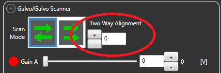

Purpose
This is a simple script aimed at fixing offets between rows acquired on galvo scanning microscopes in two-way mode. It has been tested on data collected using a ThorLabs microscope. In the ThorImage software, these offsets are called Two Way Alignment:
If you forget to set the Two Way Alignment during your imaging session, this script can correct the alignment. Also, ThorImage only offers integer pixel corrections, whereas this script allows for sub-pixel alignment.
Usage
Included is an example t-series to demonstrate the functionality. At a python prompt, type run -i example_usage.py to see it in action. The following figure demonstrates the results. Note the vertical structure on the right side of the image that becomes clearer after alignment.
Authors and Contributors
Written by Peter Weir (@ptweir) in 2016 for use in Michael Dickinson's laboratory.